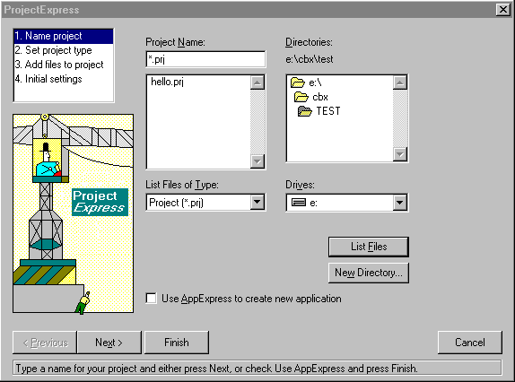
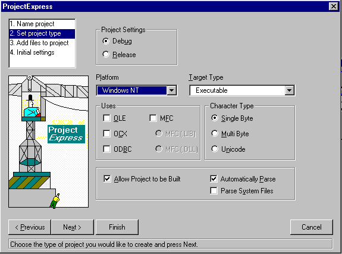
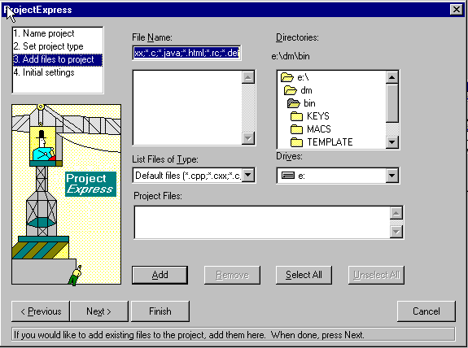
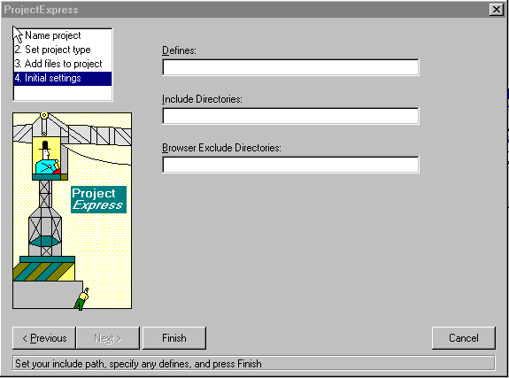
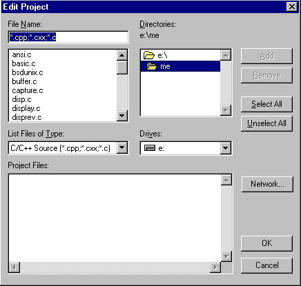
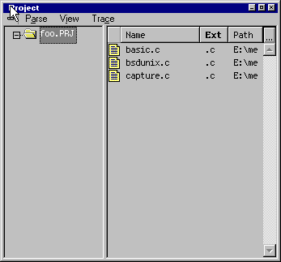
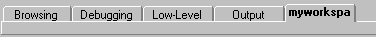

Home
| Search
| CTG
| RTL
| IDDE
| STL
Home
| Search
| CTG
| RTL
| IDDE
| STL
Last update Fri Apr 28 16:30:16 2006
|
Reference 1. Introducing Digital Mars C++ 2. Introducing the IDDE Part 2: Creating an Application with Digital Mars C++ 3. Starting a Project and Defining Workspaces 4. Generating an Application Framework 5. Defining Classes and Their Hierarchies 6. Editing Program Code 7. Adding Look and Feel with Resources 8. Testing an Application Part 3: Learning Digital Mars C++ by Example 9. Introduction to the Tutorial 10. Lesson 1: Create the DOS Application 11. Lesson 2: Generate an Application Framework 12. Lesson 3: Customize the Interface 13. Lesson 4: Add Messages with ClassExpress 14. Lesson 5: Add a Dialog Box with ClassExpress Part 4: More about Creating Programs 15. More about Projects and Workspaces 16. More about Project Build Settings 17. More about AppExpress 18. More about ClassExpress 19. Class Editor Reference 20. Hierarchy Editor Reference 21. Text Editor Reference 22. Using Version Control Part 5: More about Testing Programs 23. Controlling and Configuring the Debugger 24. Commands Available in Debugging Mode Part 6: About Managing Resources 25. ResourceStudio Resource Editor 26. Dialog Editor 27. Menu, Accelerator and String Table Editors 28. Bitmap, Cursor, Icon, and Font Editors 29. Version Information and Custom Resource Editors Part 7: Appendixes A. Expression Evaluation B. IDDE Settings and Command-Line Options C. Using NetBuild |
3. Starting a Project and Defining WorkspacesThis chapter describes the initial steps involved in writing an application: creating the project that defines your target and then defining workspaces used in working on a project. These topics are covered here in sufficient depth to get you started; more detailed information is presented in More about Projects and Workspaces.What Are Projects and Workspaces?A project is a collection of files from which an executable or library is generated. The IDDE automatically generates a file (called the makefile) that tracks the dependencies in your project. This makefile is configured using the project option settings you specify. The IDDE executes the makefile when you build your project. File extensions are used to determine which tool is needed to build each component. Project building is discussed in Testing an Application.Workspaces, which are among the IDDE's most useful features, are window configurations used for particular tasks. To create a workspace, you name and save the exact arrangement of windows on your screen. Any time you need to perform a similar task, you can instantly open that workspace, with the windows organized the way you want them. For more information on workspaces, refer to More about Projects and Workspaces. Starting a ProjectThis section describes how to start a new project, how to open an existing project, and how to edit the project contents.Purpose of a projectThe project is central to building an application with the IDDE. A project is a container for the application you are building. It contains the various components necessary for building an application or a library, as well as information about how to build it.Projects speed development time because they let you recompile only the source files that have changed, or whose header files have changed, since the last time the project was built. For example, if your program has five source files and you have changed one of them since the last build, only that file is recompiled when you build the project. (You can, however, choose to recompile all the files.) The project management system does this by automatically analyzing the dependencies of the source files and constructing or updating the makefile each time the project is built. Contents of a projectA project can contain several different types of file, including C and C++ source, assembly language source, resource scripts, object files, libraries, and module definition files. And because a project is built in a hierarchical manner, you can include projects within projects.The IDDE stores information about a project on disk as a project file with a .prj extension. Among other information, this file includes a list of the source files contained in a project. When you build the project, the IDDE constructs a makefile (.mak)— or updates the existing makefile— based on the files the project contains. Project options are stored in an option set file (.opn) that is referenced in the project file. The option set file can be loaded into another project, making it easy to transfer all option settings from one project to another. Creating a new projectTo create a new project, choose New from the Project menu. The ProjectExpress dialog box opens. ProjectExpress lets you specify the project name, initial project options, and initial project contents of the new project. The ProjectExpress dialog box contains four pages of options, described in the following sections.Naming the projectInitially ProjectExpress displays the Project Name page (see Figure 3-1). [Figure 3-1 ProjectExpress Project Name page] Select the directory in which you want to create the project from the Directories listbox, or click on New Directory to make a new directory for this project. Enter the name of the new project in the Project Name textbox. If you select Use AppExpress to create new application, then click on Finish, AppExpress will start. AppExpress is discussed in Generating an Application Framework. Setting the project typeTo set the target operating system, target type, and other options, click on Next, or select Set project type from the left listbox, to switch to the Project Type page (Figure 3-2). [Figure 3-2 ProjectExpress Project Type page] After the project is created, you can modify these settings by choosing Settings from the Project menu. These options are discussed in more detail in More about Projects and Workspaces. Adding files to the projectTo add pre-existing source, header, or other files to the new project, click on Next, or select Add files to project from the left listbox, to continue to the Project Edit page (Figure 3-3). [Figure 3-3 ProjectExpress Project Edit page] If you are creating a new project, you do not need to do anything on this page. After the project is created, you can open a similar dialog box by choosing Edit from the Project menu (see the section "Adding and deleting project files" later in this chapter). Setting defines and include directoriesTo define macros, specify search paths, or exclude a directory from parsing, click on Next, or select Initial settings, to continue to the last page of the ProjectExpress dialog box (Figure 3-4). [Figure 3-4 ProjectExpress Initial Settings page] To define a macro on the compiler command line, enter the macro in the Defines textbox (for example, COLOR=1). Separate multiple macro definitions with semicolons. Type any #include file search paths you want on the compiler command line in the Include Directories textbox. Type any directories to be excluded from parsing in the Browser Exclude Directories textbox. (For more information about parsing, see Defining Classes and Their Hierarchies). In general, you can leave these fields blank. You may change these options later by choosing Settings from the Project menu. After the project is set up the way you want, click on Finish to create the new project. Opening an Existing ProjectTo open a project that already exists, choose Open from the Project menu. The IDDE displays the Open Project dialog box. Select the desired project filename and click OK.IDDE lets you work with only one project at a time. If you're already working with a project when you open a new one, the IDDE closes the project in process. An additional method for opening existing projects is to choose one from the list of projects at the bottom of the Project menu. Projects are added to this menu as they're opened or created. This makes it easier for you to switch back and forth between projects as you work. Adding and deleting project filesTo add or remove files from your project, choose Edit from the Project menu. The IDDE opens the Edit Project dialog box, shown in Figure 3-5. [Figure 3-5 Edit Project dialog box] The Project Files listbox contains the files in your project.
After you click OK, the IDDE checks your project for dependencies and creates a makefile. While checking for dependencies, the IDDE adds the additional files it needs to build your project. For example, it adds all the header files that your source files reference with the #include directive. The Project windowThe Project window, shown in Figure 3-6, displays a list of files in the current project. You can open the Project window by choosing Project from the Goto View submenu of the IDDE's Window menu. [Figure 3-6 Project window] You can double-click on the name of a source file in the right pane to open that file for editing in a Source window. (See Editing Program Code, for a description of text editing functions.) You can see the current project's subprojects, or open a subproject, by double-clicking on the project name in the left pane. The icon to the left of each filename indicates certain properties of the file. If the icon is blue, the file was explicitly added to the project; if the icon is gray, the file is included in the project by a dependency relationship or by parsing. The icon next to each filename contains different information during debugging. An asterisk indicates that the module contains debug information. A "T" at the right of the icon indicates that tracing is enabled in the module. Dots indicate that the module contains breakpoints: a green dot indicates enabled breakpoints, and a red dot indicates disabled breakpoints. Closing a projectTo close a project that is currently open, choose Close from the Project menu. The project will be saved automatically.Importing a Microsoft or Borland projectYou can import an existing Microsoft or Borland project into the IDDE project system, by using the other product's makefile.First, choose Open from the Project menu. In the "List files of type" listbox, choose Import Make. When you open a Microsoft or Borland makefile, the IDDE lets you work with it as you would a Digital Mars C++ project. To build the project with the original Microsoft or Borland makefile, use the Make page under the Build tab in the Project Settings dialog box (see More about Project Build Settings) to call the original makefile or batch file. Defining WorkspacesThis section describes how to set up and save your own workspaces.The purpose of workspacesThe IDDE's workspace feature lets you set up multiple screen configurations, each of which is optimized for a specific task. For example, you can have a workspace for editing source files, another for working with project resources, and another for debugging DLLs. You can define up to five different workspaces.Creating a workspaceTo start a new workspace, choose New from the Workspace submenu of the IDDE's Environment menu. Type the name of the new workspace in the Workspace Name dialog box. This name appears in the Workspace toolbox, as shown in Figure 3-7. You can then configure the screen as you like by opening the windows you need and positioning and sizing them to suit your requirements. You can refine the workspace as you work; the IDDE automatically saves changes to a workspace configuration when you exit the workspace. [Figure 3-7 Workspace toolbox]
Selecting a workspaceTo change workspaces, click on a tab in the Workspace toolbox, or choose from the list of workspaces in the Environment menu. Changing your workspace does not affect your project; it just changes the way information is presented on the screen.More options for workspacesFor more information on how to create, edit, clone, and delete workspaces, and to find out how to change workspace options, refer to More about Projects and Workspaces. |